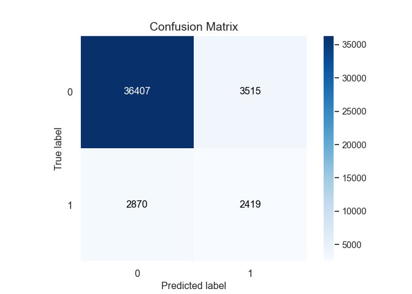

Introduction
Le module scikit-learn permet d’obtenir facilement des indicteurs comme l’AUC ou le F-score, et avec scikit-plot il est facile de visualiser la courbe ROC ou la matroce de confusion.Petite demonstration sur le jeu de donnees qui suit.
# les donnees
library("otvPlots")Ici le jeu de donnees est traite comme un echantillon test et on choisit directement un des champs numeriques de la table (la duree du dernier appel du client) comme score de la variable cible “y” recodee en 0/1. En effet ce seul champ est tres predicif de la cible (l’ouverture d’un compte a terme dans une banque).
import numpy as np
import pandas as pd
import matplotlib.pyplot as plt
from sklearn.metrics import roc_auc_score, roc_curve, plot_roc_curve, \
confusion_matrix, classification_report, precision_recall_curve
from sklearn.preprocessing import MinMaxScaler
import scikitplot as skplt
import seaborn as sns
sns.set()
pd.set_option('display.max_columns', None)
bank = r.bankData
bank.rename(columns = {'duration': 'score'}, inplace = True)
bank["cible"] = bank['y'].apply(lambda x: 1 if x=="yes" else 0)On normalise le pseudo-score entre 0 et 1.
scaler = MinMaxScaler()
bank["score"] = scaler.fit_transform(bank[["score"]])Frequence de la modalite cible : 12%.
print("%.3f" % bank["cible"].mean())0.117Rappel, precision, F-score optimal
La courbe ROC, l’AUC, la sensibilite et la sensibilite ne dependent pas de la frequence de la modalite cible : on obtiendrait les memes valeurs (a alea pres) en equilibrant l’echantillon test. Dans le cas d’une cible rare, un modele avec une bonne sensibilite et specificite peut avoir une mauvaise precision, alors qu’une precision elevee impliquera une specificite elevee.
Ci-dessous une matrice de confusion avec une cible rare, des sensibilites et specifites elevees mais une mauvaise precision : la petite erreur sur la specificite couplee au grand volume de non-cibles suffit a faire de trop nombreux faux positifs qui entachent la precision du modele.
dtf = pd.DataFrame({'False': [5000, 5], 'True': [500, 50]})
dtf.columns.name = "predit"
dtf.index.name = "reel"
dtfpredit False True
reel
0 5000 500
1 5 50C’est pourquoi il est plus interessant de suivre les 2 indicateurs suivants :
- la sensibilite (= rappel de la classe 1) : si elle est proche de 1, le modele identifie une bonne partie des veritables cibles
- la precision : si elle est proche de 1, les cibles prevues par le modele sont majoritairement des veritables cibles. La precision est egale au lift multiplie par la frequence de la modalite cible.
Le F-score se calcule a partir de ces indicateurs pour trouver un bon compromis entre leurs valeurs respectives. On cherche le seuil de F-score maximal, ici il est assez proche de la frequence de la modalite cible (12%).
precisions, rappels, seuils = precision_recall_curve(bank.cible, bank.score)
# precisions et rappels ont un point supplementaire final egal resp. a 1 et 0, sans seuil
precisions = precisions[:-1]
rappels = rappels[:-1]
condition = rappels + precisions > 0
precisions = precisions[condition]
rappels = rappels[condition]
seuils = seuils[condition]
f1_scores = 2 * rappels * precisions/(rappels + precisions)
val_seuil = seuils[np.argmax(f1_scores)]
print("Meilleur seuil : ", val_seuil)Meilleur seuil : 0.09617730784871899print("Meilleur F1-Score : ", np.max(f1_scores))Meilleur F1-Score : 0.4310790341263477La fonction suivant fournit differents indicateurs :
- recall = le rappel : selon la modalite concernee (1 ou 0), c’est la sensibilite ou la specificite
- precision, f1-score : a ne regarder que pour la modalite cible 1
print(classification_report(bank.cible, bank.score >= val_seuil)) precision recall f1-score support
0 0.93 0.91 0.92 39922
1 0.41 0.46 0.43 5289
accuracy 0.86 45211
macro avg 0.67 0.68 0.68 45211
weighted avg 0.87 0.86 0.86 45211Matrice de confusion
La matrice de confusion proposee par scikit-learn est assez sommaire :
print(confusion_matrix(bank.cible, bank.score >= val_seuil))[[36407 3515]
[ 2870 2419]]La fonction crosstab donne un affichage bien plus parlant.
dtf_conf = pd.DataFrame({"cible" : list(bank.cible), "prev": bank.score >= val_seuil})
print(pd.crosstab(dtf_conf.cible, dtf_conf.prev, rownames=['reel'], colnames=['predit']))predit False True
reel
0 36407 3515
1 2870 2419Avec scikit-plot on a une matrice de confusion plus visuelle, mais ca n’est vraiment utile que pour du multi-classe.
skplt.metrics.plot_confusion_matrix(bank.cible, bank.score >= val_seuil)
plt.show()
AUC et courbe ROC
L’aire sous la courbe ROC :
val_auc = roc_auc_score(bank.cible, bank.score)
print(f"{val_auc: .3f}") 0.808A l’aide des donnees fournies par la fonction roc_curve on peut realiser la courbe ROC a la main et positionner le seuil choisi.
un_moins_spec, sens, seuil = roc_curve(bank.cible, bank.score)
recall_0 = 1 - un_moins_spec[sum(seuil>val_seuil)]
recall_1 = sens[sum(seuil>val_seuil)]
plt.figure(figsize=(7, 5))
sns.lineplot(un_moins_spec, sens, estimator=None, color = "gold")
plt.title(f"courbe ROC d'AUC {round(val_auc,2)}")
plt.plot([0,1], [0,1], color = 'navy', linestyle = '--')
plt.plot(1 - recall_0, recall_1,'ro',label='Seuil choisi'); plt.legend();
plt.xlabel('Taux faux positifs')
plt.ylabel('Taux vrais positifs')
plt.legend(loc="lower right")
plt.show()Avec scikit-plot la courbe ROC s’obtient tres facilement. Les macro et micro-moyennes n’ont d’interet que pour les modelisations avec > 2 classes, ce qui n’est pas le cas ici.
dtf = pd.DataFrame({"non": 1 - bank.score, "oui": bank.score})
skplt.metrics.plot_roc(bank.cible, dtf)
plt.show()La courbe de gain cumulee : au decile X elle fournit la part de la population cible totale qui se trouve dans les X 1ers deciles. En termes statistiques cette courbe fournit la sensibilite cumulee du modele. Cette courbe est beaucoup plus operationnelle que la courbe ROC, elle permet de choisir un seuil non pas a partir de choix theoriques (F-score) mais de criteres pratiques (quel est le cout de cibler X% de la population, pour quel retour sur investissement).
skplt.metrics.plot_cumulative_gain(bank.cible, dtf)
plt.show()